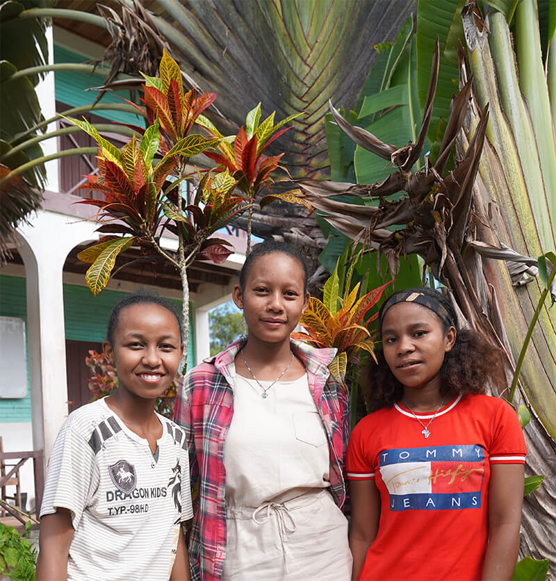
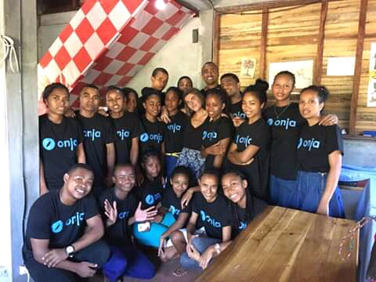
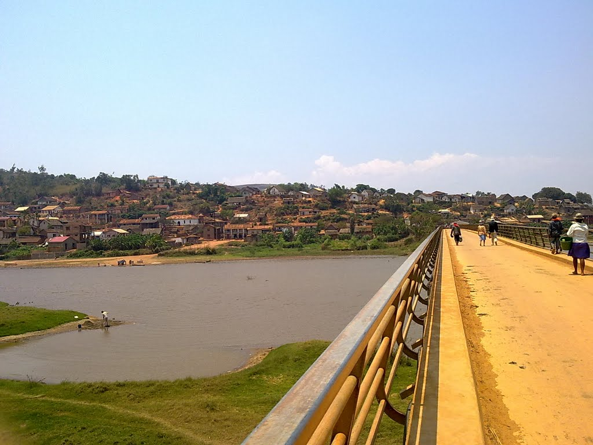

When did it start and how did it go ?
Last year 07th, January 2019. I started to study English at Onja. It was really hard because English is not my first language. I am from Madagascar and I speak Malagasy.
What happened during the year ?
The first month we were struggling a lot and felt homesick as well because we are a long way from our home and we were not used to live far from our family. I leave with two of my classmates, they are so friendly and lovely girls. We have never fought untill now even though we are from three different villages and cultures. 
Every two months we were having a test, most of the time I failed, but I have never giving up on my study.There were few of the students gave up and went home, but I didn't because I don't have anything to do in my village.
There were lots of difficulties and obstacles in the way to be an English speaker, but we overcame with that, we can speake English even if it was not fluently yet and we have passed A1, A2, B1 and B2 levels. It wasn't easy we strove hard to get those levels.
People who helped us during the year.
There were four teachers helped us to study, they were so cool and friendly, you can share your problem with them, they were like our parents.We were 20 students in a class, we love each other and help each other. This is our picture, I am so happy to have them, later we are going to be our country's pride.
At the end of the year.
December 2019, we had a holiday and we went home to see our family. It was really good to see your family, your friends and your village again. we were so excited and happy. Most of the people were unhappy to see you again but yuor family were extremely happy. It was a great time even if it was short, I helped my family, went to the rice field and made some funs together, it was so good, enjoyable and memorable holiday. This is our village's picture, it is really good looking and nearby a river.
New year again.
This year 07th, January 2020. We went back from holiday and started to learn new things, we are in the coding part now. It is extremely hard, We have just done Markdown and now we are working on HTML, not only that but also we are still working on our C1 Engish level with beautiful British accent.That is it for the first month.